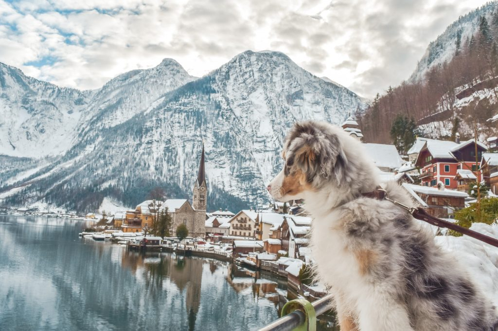
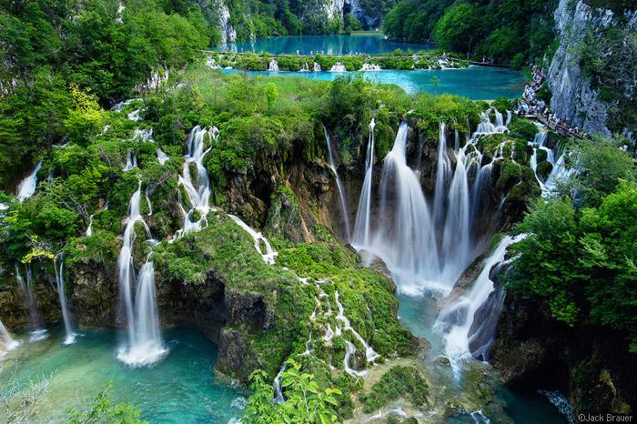

|   | A kirándulás során az emberek kiszakadnak városi környezetükből, és a természetes környezetben töltik el idejüket. A társadalom egyik fontos célja az, hogy természeti környezetünket megóvjuk, ezért a természetjárás fontos része a fiatalok, illetve a természetbe vágyók oktatása: hogyan őrizzék meg a természetes állapotot, hogyan zavarják meg legkevésbé azt; ne szemeteljenek vagy ne gyújtsanak tüzet erre nem alkalmas helyeken. A kirándulás lényege, hogy elszakadj a monotod városi világtól és akár falukat, akár más természti csodákat nézhess meg és gyönyörködhess bennük. Ezenfelül jó közösségi program is lehet, hogyha elmentek kirándulni a családotokkal vagy barátaitokkal, mert így közelebb kerülhettek egymáshoz, azáltal, hogy sok időt töltötök együtt Ha valaki nagyon komolyan veszi a túrázást, akkor van számára is lehetőség kiélni a versenyvágyát:
|
| Hobbik | Film/Sorozat nézés | Kirándulás | Kártyajátékok | Floorball |